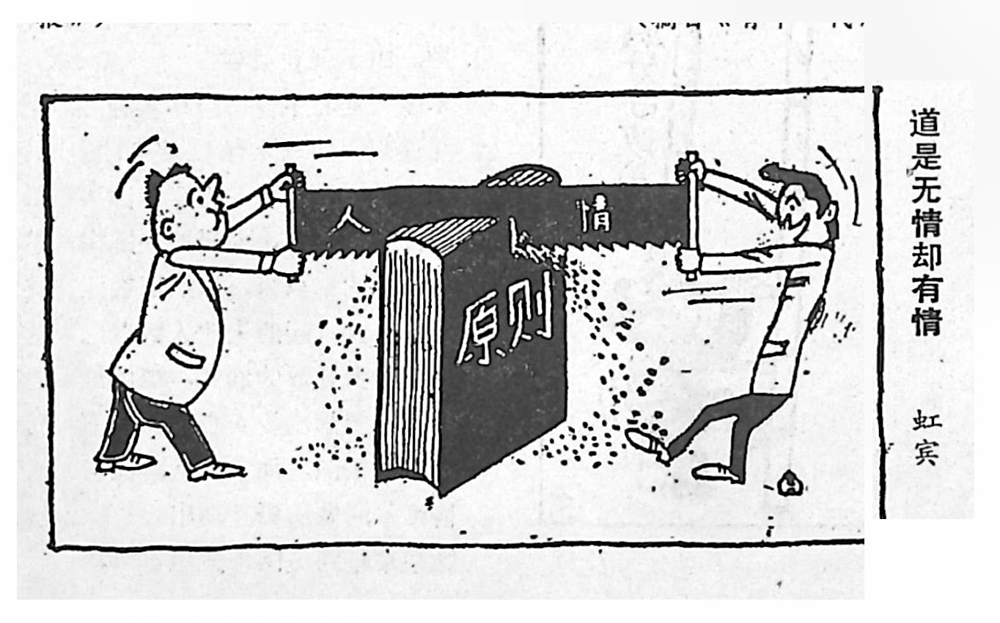

虹宾 《人事》1986年第11期（总第14期），第42页
道是无情却有情
Heartless, Yet Full of Feeling
- Text in the drawing
- 人情 / 原则
Favour / Principle - Description
- Two men saw through a thick book labeled 原则 (principle) with a saw whose blade reads 人情 (personal favour).
- Note
- The title quotes a Tang poem by Liu Yuxi (道是无情却有情); 情 puns on 人情, personal favours.
- Artist
- Hong Bin 虹宾
- Published in
- 《人事》1986年第11期（总第14期）, p. 42
- Themes
- Connections (guanxi)

Cite
Hong Bin, “道是无情却有情” [Heartless, Yet Full of Feeling], Renshi (Personnel) 《人事》, 1986, no. 11, p. 42.